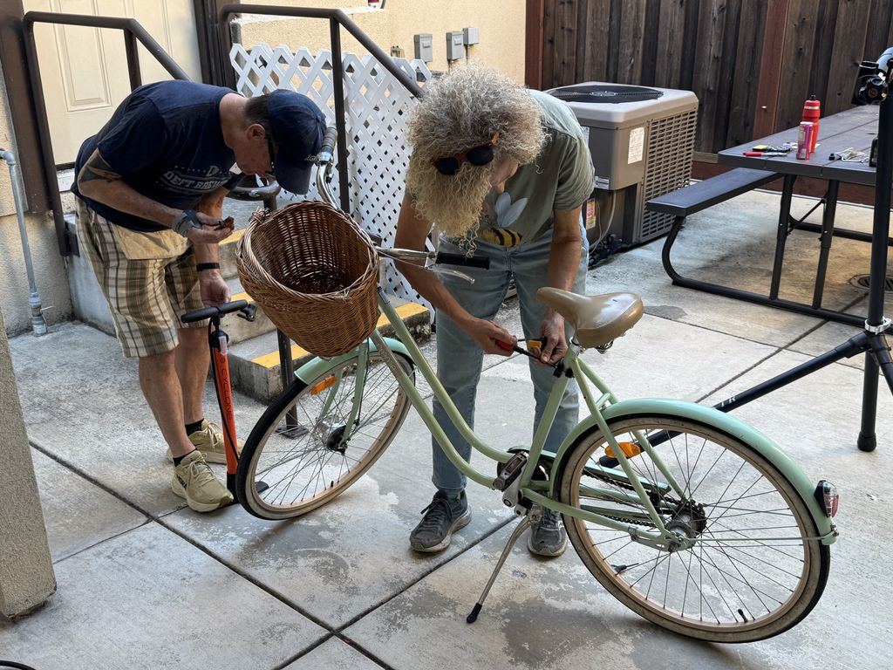
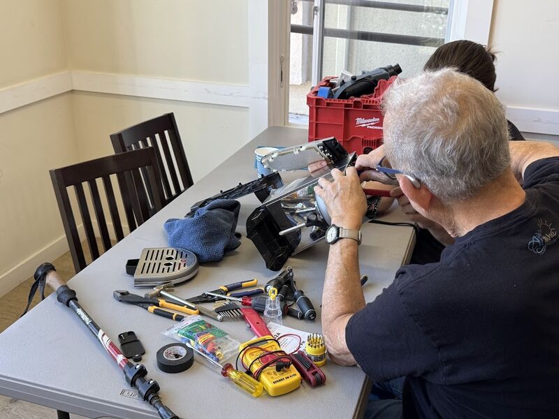
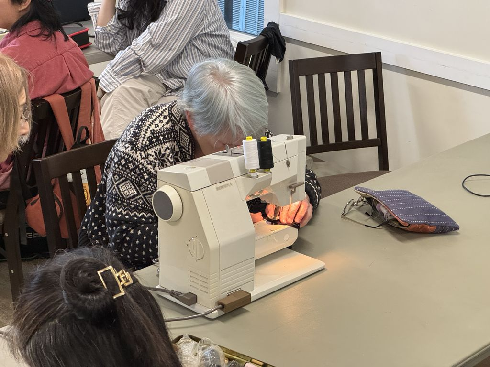
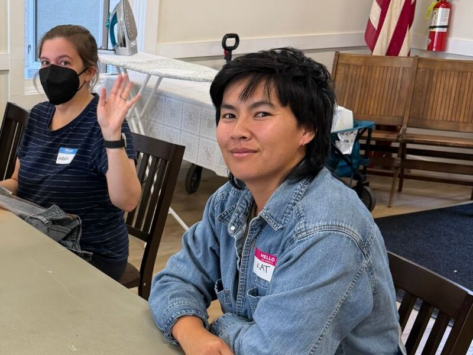
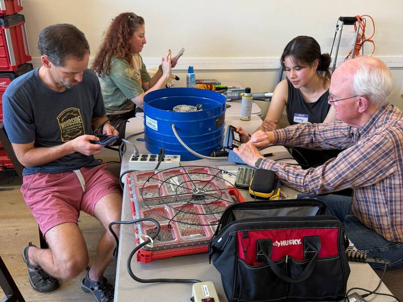
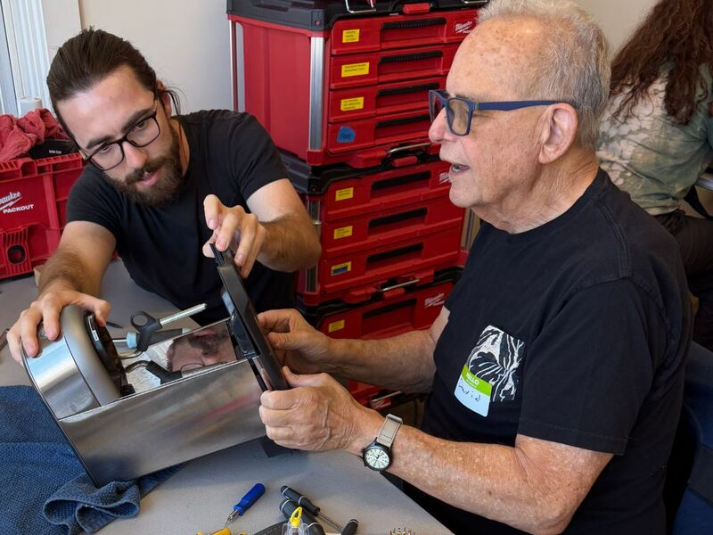
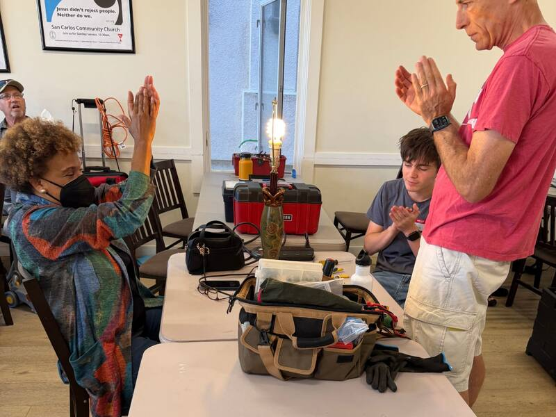
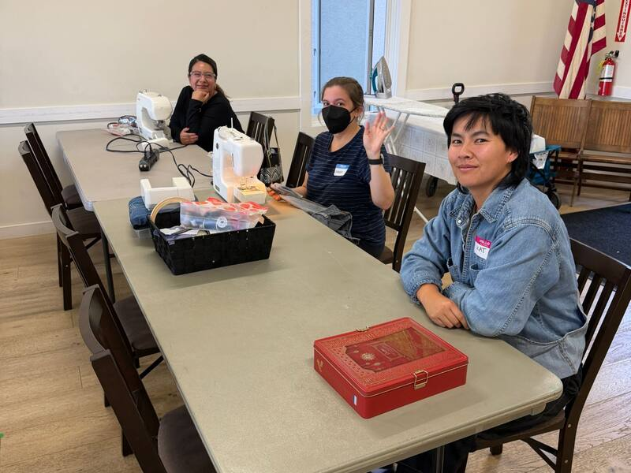
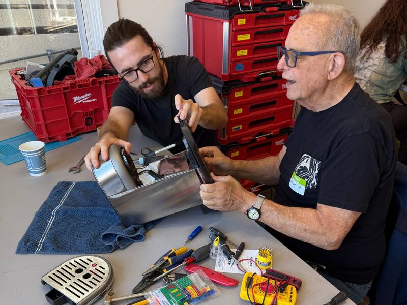

Your neighbors know how to fix things.
Repair Café of the Peninsula is a free, monthly repair event in San Carlos. Bring something broken and fix it side by side with a volunteer.
Next Repair Café
Saturday, November 21 · 3–6 PM
Callis & Elaine Community Center, 1336A Arroyo Ave, San Carlos
Free and drop-in. Check-in closes at 5:30 PM.
What is a Repair Café?
Bring it broken. Fix it together.
A Repair Café is a free community gathering where people bring broken things and work alongside skilled volunteers to fix them, hands-on.
It isn't a drop-off service. You sit down with a volunteer, figure out what's wrong together, and do the repair with their guidance, so you leave knowing a little more about how your things work. The idea started in Amsterdam in 2009, and there are now almost 4,000 Repair Cafés worldwide. Learn about the movement.
-

1 Bring a broken item
A lamp that flickers, a jacket with a torn seam, a chair that wobbles. No appointment needed: just check in at the door and we'll find you a seat.
-

2 Fix it side by side
We pair you with a volunteer who knows that kind of repair. You do the work and they guide you through it. Simple fixes take 15 minutes; tricky ones can take an hour or more.
-

3 Meet your neighbors
Chat with the people at your table and cheer when something comes back to life. Of the 79 items brought to our first two events, 56 went home working.
- Free Always, for everyone
- Drop-in No appointment needed
- Hands-on You fix it with a volunteer
- 3–6 PM Check-in closes at 5:30
Bring it in
What we fix
If you can carry it in and you're ready to roll up your sleeves, there's a good chance we can help.

-
Electronics & small appliances
Lamps, fans, radios, chargers, headphones and similar small appliances. If it plugs in or runs on batteries, bring it in and diagnose it with a volunteer.
-
Sewing & textiles
Torn seams, missing buttons, frayed hems and worn fabric. Bring your clothing, bags and soft goods and stitch them back together with a volunteer guiding the way.
-
Furniture & wood
Wobbly chairs, broken hinges, stuck drawers. Get hands-on with a volunteer to stabilize, reattach and restore it together.
-
Bicycles
Flat tires, slipping chains, weak brakes and gears that won't shift. Wheel your bike in and tune it up with a volunteer so it rolls safely again.
-
Toys, ceramics, jewelry & everything else
Broken toys, chipped mugs, snapped necklaces, loose clasps and the household things that don't fit anywhere else. If it truly can't be fixed, we'll tell you honestly.
Please leave at home
- Large appliances
- Earbuds, phones, cameras and watches
- Toasters or ovens
- Three-phase power tools
- Sewing alterations or resizing (repairs only)
- Items missing critical parts that can't reasonably be sourced
- Vehicles or motorized equipment
- Anything hazardous: leaking batteries, cracked screens, mold
Not sure? Email before the event.
Two events in
What we’ve fixed together so far
- 79Items brought in
- 56Fixed and back in use
- 71%Fix rate
- 363lbKept out of the landfill
-

-

-

-
-
-

In the news
“Repair Café of the Peninsula events build community”
San Mateo Daily Journal, October 19, 2026 Read the story
Repair Café of the Peninsula events build community
Read the full story ↗Get involved
It all runs on volunteers.
Twenty neighbors volunteered at our October event. We’d love for you to be one of them.
We need repair coaches who know their way around electronics, sewing, furniture, bikes and odds and ends. Just as important are the people who welcome visitors, keep the room running, take photos and spread the word. Most roles need no repair skills at all.
- Repair coaching
- Welcome & check-in
- Event flow
- Photography
- Design & social media
- Flyers & partnerships
It’s about 3–4 hours at a single event, with no ongoing commitment.
Why we do it
Less waste, more neighbors who can fix things.
The Peninsula is a vibrant, diverse stretch of towns along the Bay and the coast. But like everywhere else, we throw too much away.
Repair Café of the Peninsula was incorporated as a California nonprofit corporation on October 6, 2026, and is applying for federal 501(c)(3) status.
Build community
A welcoming space where people from all walks of life meet, connect and share skills. Repair Cafés are as much about human connection as they are about fixing things.
Reduce waste
The Bay Area sends millions of pounds of electronics and household goods to landfill every year. We want to keep as much of it as we can in use, one repair at a time.
Revive repair skills
We live in a throwaway culture. We connect experienced fixers with people eager to learn, and make repair feel approachable instead of intimidating.
Stay local & grassroots
We're a small, community-run effort with no corporate backing and no red tape. Just people who believe in fixing things and helping their neighbors.
Serving Belmont, Burlingame, Daly City, Half Moon Bay, Menlo Park, Millbrae, Pacifica, Redwood City, San Bruno, San Carlos, San Mateo, South San Francisco and the surrounding areas.
FAQ
Good questions
Something we haven't covered? Email
Do I need an appointment, or is it drop-in?
Drop-in, no appointment needed. Just show up during event hours with your item and we'll get you set up with a volunteer. We may ask you to add your name to a waitlist if things get busy, but there's no pre-registration.
Is it really free?
Yes, completely free for visitors. Repair Cafés around the world work this way: skilled volunteers give their time, and the community benefits. We may have a tip jar or small donation box for those who want to contribute to future events, but it's never expected or required.
How many items can I bring?
We ask that you bring one item per visit so that every visitor gets quality time working hands-on with a volunteer. If it's a quiet event, we're happy to tackle more.
How long does a repair take?
It depends on the item. Simple fixes (a button, a loose connection) might take 15–20 minutes. More complex repairs can take an hour or more. You'll be working alongside the volunteer the whole time, so plan to stay and be hands-on.
What if my item can't be fixed?
We'll always be upfront. If a repair is beyond what we can tackle together on the day (wrong tools, missing parts, or a fault that needs a specialist), we'll say so clearly and suggest next steps where we can. We never guarantee a fix, but you and your volunteer will always give it an honest best effort.
How often are events held?
For now we're holding events monthly on a Saturday, same place and time: 3–6 PM at the Callis & Elaine Community Center in San Carlos (1336A Arroyo Ave). Check-in closes at 5:30 PM. The schedule can change, so always check this website for the next date.
Our next event is Saturday, November 21st, 2026. Join our mailing list for reminders and updates.
I have repair skills. How do I get involved?
We'd love to have you. Have a look at our volunteer roles and sign up for a slot at the next event, or join our mailing list to hear about future ones. We ask for roughly 3–4 hours at a single event, and no prior volunteering experience is needed.
Are you a nonprofit organization?
Yes! Repair Café of the Peninsula was incorporated as a California nonprofit corporation on October 6, 2026. We're now applying for federal 501(c)(3) tax-exempt status, and until that's granted, donations are not yet tax-deductible. We appreciate your support regardless.
Stay in touch
Get a heads‑up before the next one.
Join our mailing list to hear when we announce an event and when we need volunteers.